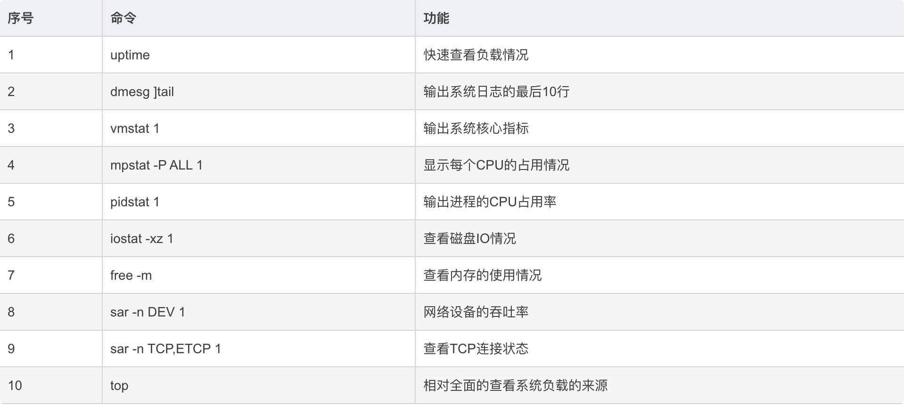
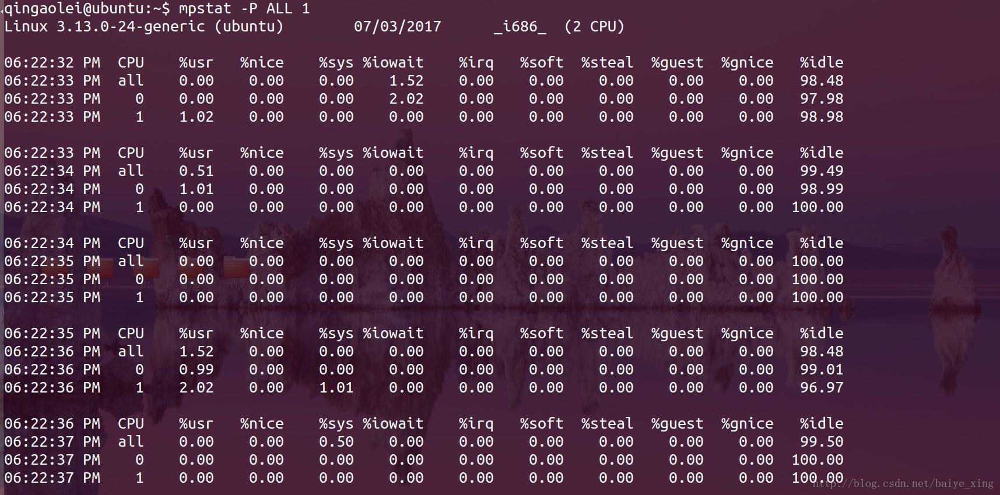
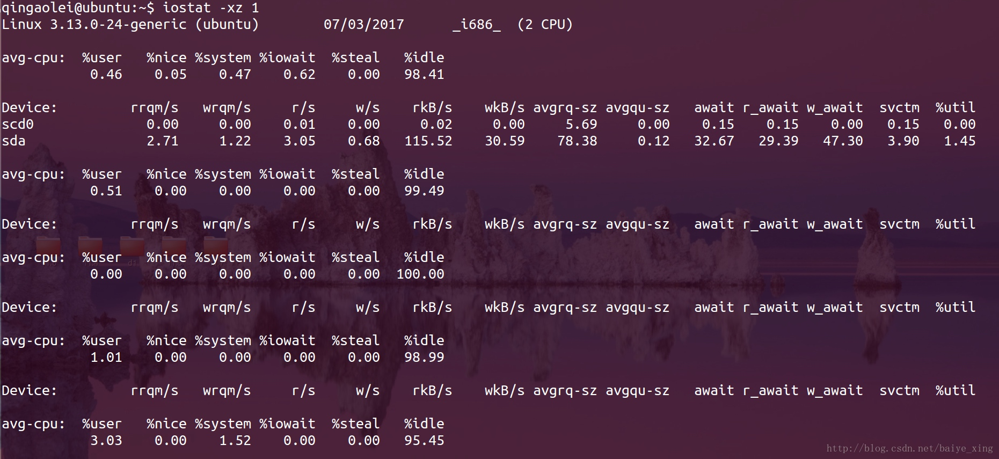
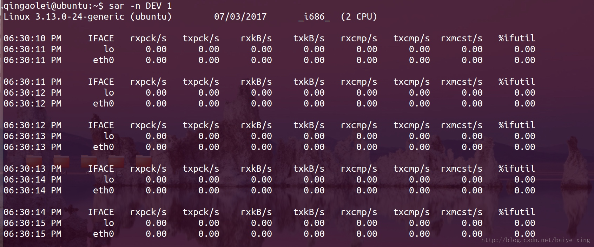
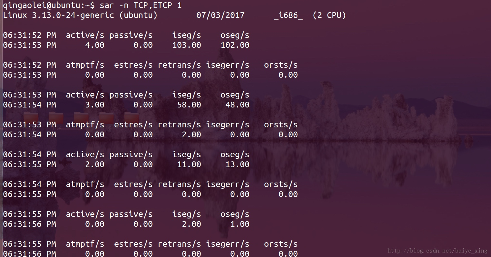
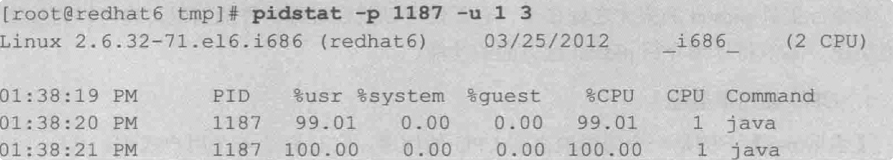
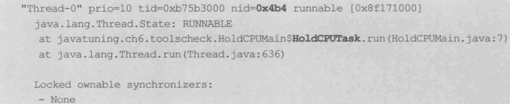

uptime
这个命令可以快速查看系统的负载情况，输出分别表示1分钟、5分钟、15分钟的平均负载情况。
➜ ~ uptime
21:17 up 6 days, 4:34, 2 users, load averages: 2.00 1.18 0.93
mpstat -P ALL 1

分析：该命令可以显示每个CPU的占用情况。
监控内存和cpu----vmstat 命令
vmstat 也是一款功能比较齐全的性能监测工具。它可以统计 cpu、内存使用情况、swap使用情况等信息
如下面样例，每秒采样一次，共计三次
[goddess@goddess ~]$ vmstat 1 3
procs -----------memory---------- ---swap-- -----io---- -system-- ------cpu-----
r b swpd free buff cache si so bi bo in cs us sy id wa st
1 0 0 2522180 2108 178404 0 0 398 31 234 645 3 4 93 0 0
0 0 0 2522180 2108 178404 0 0 0 0 72 76 0 0 100 0 0
0 0 0 2522180 2108 178404 0 0 0 0 65 72 0 0 100 0 0
监控 IO使用 ---- iostat命令

以上命令显示了磁盘IO的使用情况信息
-d 表示输出磁盘使用情况，输出结果中各个列的含义如下
- tps 该设备每秒的传输次数
- kB_read/s 每秒向设备读取的数据量
- kB_wrtn/s 每秒向设备写入的数据量
- kB_read 读取的总数据量
- kB_wrtn 写入的总数据量
- await：IO操作的平均等待时间，单位是毫秒。这是应用程序在和磁盘交互时，需要消耗的时间，包括IO等待和实际操作的耗时。如果这个数值过大，可能是硬件设备遇到了瓶颈或者出现故障。
- %util：设备利用率。这个数值表示设备的繁忙程度，经验值是如果超过60，可能会影响IO性能（可以参照IO操作平均等待时间）。如果到达100%，说明硬件设备已经饱和。
- avgqu-sz：向设备发出的请求平均数量。如果这个数值大于1，可能是硬件设备已经饱和（部分前端硬件设备支持并行写入）。
磁盘IO很容易成为系统性能瓶颈，通过iostat 可以快速定位系统是否产生了大量的 IO 操作
##sar -n DEV 1

分析：该命令在这里可以查看网络设备的吞吐率。在排查性能问题时，可以通过网络设备的吞吐量，判断网络设备是否已经饱和。
sar -n TCP,ETCP 1

分析：sar命令在这里用于查看TCP连接状态，其中包括：
active/s：每秒本地发起的TCP连接数，既通过connect调用创建的TCP连接；
passive/s：每秒远程发起的TCP连接数，即通过accept调用创建的TCP连接；
retrans/s：每秒TCP重传数量；
free -m
多功能诊断器---pidstat 工具
pidstat 的强大之处在于，它不仅可以监控进程的性能情况，也可以监控线程的性能情况
cpu使用率监控---cpu 100%的问题就定位
通过 jps 获取到 java 程序的 PID,然后使用 pidstat 命令输出程序的 CPU 使用情况


pidstat 的参数 -p 用于指定进程ID，-u表示对cpu使用率监控，1 3 表示每秒采样一次，总计3次
从图中可以看出 cpu使用率几乎100%
然后更进一步监控线程信息
使用命令
pidstat -p 1187 1 3 -u -t

参数 -t 将系统性能的监控细化到线程级别。从输出中可以知道，该java应用程序值所以占用如此高的 cpu，是因为 1204 线程的缘故
知道是java程序的哪个线程引起的 cpu 100% 之后，使用 jstack -l 1187 查看线程信息，需要注意的一点是 jstack 的线程ID使用的是 16进制，pidstat 显示的是10进制，需要做一下进制转换
# 查看 java 进程的线程信息
jstack -l 1187

从结果图中看到 0x4b4 正是引起 cpu 100%的元凶，如此 造成 cpu 100%的问题就定位到了
IO 使用监控
进程PID ： 22796 ，程序中的线程 22813 疯狂写入磁盘，在使用 jstack -l 22796 查看程序的线程信息，定位到时哪个任务线程一直在写磁盘
内存监控
输出各列的含义如下：
- minflt/s 表示该进程每秒 minor faults(不需要从磁盘中调出内存页)的总数
- majflt/s 表示该进程每秒major faults(需要从磁盘中调出内存页)的总数
- VSZ: 表示该进程使用 虚拟内存大小，单位 kb
- RSS: 表示该进程占用物理内存大小，单位 kb
- %MEM: 表示占用内存比率